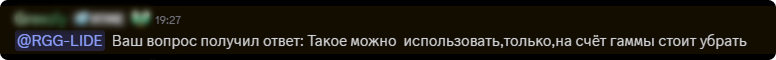

Графика
Прицел
Лаунчер
Оптимизация
Управление
О программе
Настройки
Графика
Картинка игры
Выключить анизотропную фильтрациюСглаживание краёв текстур. Выключи — будет больше FPS.
Пресет графикиБыстрый выбор качества картинки.
Дальность прорисовкиКак далеко видно мир. Меньше — больше FPS.
Уровни mipmapЧёткость текстур вдали. 0 — быстрее всего.
Лимит FPSОграничение кадров. Меньше нагрузка на видеокарту и нагрев.
FPS без ограниченийУбрать ограничение кадров совсем.
Поле зрения (FOV)Угол обзора. 70 — узко, 90 — широко.
Вертикальная синхронизацияУбирает разрывы картинки, но добавляет задержку.
Показывать FPSСчётчик кадров на экране.
Камера
Тряска камерыПокачивание камеры при беге и уроне. Выключи — картинка стабильнее.
Прицел
Как выглядит прицел в игре
Предпросмотр на скриншоте игры. Ползунки ниже меняют прицел сразу.
Стиль прицелаМеняется в настройках игры.
Цвет прицелаОсновной цвет прицела.
Прозрачность прицела0 — невидимый, 1 — яркий.
Отступ от центраНасколько линии прицела расходятся от центра.
Длина линийДлина штрихов прицела.
Толщина линийТолщина штрихов прицела.
Размер точкиРазмер точки прицела.
Обводка прицелаКонтур вокруг прицела, чтобы его было видно на светлом фоне.
Цвет обводкиРаботает при включённой обводке.
Толщина обводкиРаботает при включённой обводке.
Динамический отступПрицел расходится при беге и стрельбе.
Динамическая видимостьПрицел прячется там, где его скрывает сама игра.
Лаунчер
Настройки лаунчера RustMe
Выделенная памятьСколько оперативной памяти получает игра. Слишком много тоже вредно.
Полноэкранный режимЗапускать игру на весь экран.
Режим отладки лаунчераСлужебные сообщения лаунчера. Обычному игроку не нужны.
Оптимизация
Пресеты, тонкая настройка и AutoCrunk
Встроенные пресетыГотовые настройки под стиль игры.
Личные профилиТри ячейки под свои наборы настроек. Название ниже попадёт и в файл при экспорте.
Обмен профилямиСохранить свои настройки в файл и передать другу. Или применить чужой файл.
Агрессивный профильМаксимум FPS. Заметно упрощает картинку и меняет пару настроек Windows.
Вернуть настройки из бэкапаВосстанавливает настройки из последней сохранённой копии.
Новый рендерДругой способ отрисовки. На слабых ПК часто быстрее.
Регионы рендераОтрисовывать только то, что видно на экране.
Подсказки интерфейсаВсплывающие советы в игре. Выключи — меньше шума на экране.
SnooperОтправка статистики разработчикам. Выключи — приватнее.
Оверлей замерзанияИндикатор холода на экране.
Оверлей кровиКрасная рамка при уроне.
Режим AutoCrunkИгра получает больше ресурсов компьютера, браузеры и мессенджеры — меньше.
Управление
Нажми на кнопку бинда и назначь клавишу. Esc отменяет захват, кнопки мыши тоже назначаются.
О программе
RustMeTweaker — твикер настроек RustMe
Данное ПО официально разрешено администрацией RustMe в 15.11.2026 — 19:27

Твикер изменяет только конфигурационные файлы лаунчера RustMe: корневой settings.json и settings.json выбранного профиля из папки profiles. Все значения записываются в пределах, доступных в ванильном меню игры и в самом лаунчере. Программа не внедряется в процесс игры, не читает и не пишет память игры, не создаёт макросы, анти-AFK и ресурс-паки.
Режим AutoCrunk меняет только приоритеты процессов через стандартный механизм Windows: выбранный приоритет для игры, пониженный для процессов из настраиваемого списка. Процессы не завершаются, их файлы не изменяются.
Встроенные пресеты «Комбат», «Оптимизация» и «Красота» меняют только те параметры, чья шкала подтверждена: дальность прорисовки, mipmap, миникарту, FOV, лимит FPS, вертикальную синхронизацию, показ FPS, динамический FOV и булевые переключатели интерфейса и оверлеев. Эти пресеты не трогают качество тумана, неба, частиц, света, биомов и деревьев.
Агрессивный профиль «СуперОптимизировать» дополнительно снижает качество эффектов (туман, небо, частицы, свет, биомы, деревья, сглаживание) до минимума в пределах ванильного меню игры. Снижение качества эффектов уменьшает нагрузку и визуальный шум, но не добавляет того, чего нет у обычного игрока: туман, небо и частицы — это параметры, которые любой может выставить руками в меню настроек. Понижение тумана делает дальнюю картинку чище, и это единственный параметр, который стоит включать осознанно: профиль применяется по отдельной кнопке и не входит в мягкие пресеты.
Агрессивный профиль также отключает полноэкранную оптимизацию Windows для javaw.exe через системный реестр (HKCU, ветка AppCompatFlags\Layers) и активирует схему электропитания «Высокая производительность» командой powercfg. Обе настройки — стандартные системные механизмы Windows, доступные вручную через свойства файла и панель электропитания; они не изменяют файлы игры и не внедряются в процесс. Эти системные настройки не входят в бэкап и не откатываются кнопкой «Откатить» — они остаются до ручной отмены в системе.
Перенос настроек в остальные профили выполняется только по отдельной кнопке и копирует лишь те ключи, которыми управляет твикер. Ключи, отсутствующие в целевом профиле, пропускаются, личные данные профиля не переносятся. Перед записью у каждого файла остаётся резервная копия.
Бэкапы — это копии твоих собственных файлов настроек в отдельной папке backups. Перед применением любого профиля бэкап создаётся автоматически; тумблер автобэкапа в настройках включает снятие копии перед каждым отдельным изменением.
Видео на фоне приложения — это официальный ролик проекта RustMe с их YouTube-канала.
Этот раздел составлен по актуальному своду правил проекта RustMe и по пунктам объясняет, почему функции твикера не относятся к запрещённым.
Почему это не чит-клиент (пункт 3.1)
- Не изменяет код игры, не внедряет DLL, не подменяет функции игрового клиента.
- Не читает и не пишет память процесса игры: вся работа — это чтение и запись текстовых файлов настроек на диске при закрытой игре.
- Не даёт преимущества сверх ванильного меню: все значения, включая качество эффектов и прицел, доступны любому игроку руками в настройках игры. Твикер не включает то, что меню запрещает, и не выставляет значения за пределами шкал.
- Не является спуфером: не изменяет и не подменяет HWID, IP и другие системные идентификаторы.
- Не устанавливает запрещённые пакеты ресурсов и не изменяет уже установленные.
- Не содержит макросов: одна клавиша остаётся одним действием. Переназначение меняет только соответствие клавиши в конфиге, без последовательностей, автокликеров и авторотации.
Почему это не анти-AFK (пункт 3.1.2)
- Программа не имитирует нажатия клавиш, движение мыши и повороты камеры.
- Не удерживает слот на сервере и не влияет на топ по часам: без ввода игра отключает за AFK как обычно.
- AutoCrunk повторяет ручную выставку приоритета в диспетчере задач Windows, только автоматизированную. Сервер не получает от этого никаких сигналов.
Почему это не дюпы и не абьюз багов (пункт 3.1.3)
- Твикер не подключается к серверу и не отправляет пакеты: вся работа идёт локально с файлами до запуска игры.
- Не использует дюпы, выбросы предметов и баги чанков: записываются только настройки, которые читает сам лаунчер.
Поведение при проверках модерации
- Не очищает ПК: нет функций удаления .minecraft, корзины, загрузок, prefetch, shellbag и недавно использовавшихся файлов.
- Не скрывает процессы и файлы: твикер виден в диспетчере задач, не подменяет свои имена и не блокирует проверочное ПО.
- Бэкапы содержат только твои файлы настроек и не являются средством сокрытия следов: в них нет игровых файлов и логов.
- При запущенном лаунчере или игре твикер отказывается писать настройки и показывает предупреждение: файлы изменяются только когда ими никто не пользуется.
Чего твикер не делает
- Не делает сетевых запросов: интерфейс загружается из локальных файлов, настройки не покидают твой ПК.
- Не собирает телеметрию и не ведёт журналов твоих действий.
- Не работает в фоне вне режима AutoCrunk, который выключается тумблером.
- Не сопротивляется изменениям правил: если администрация сочтёт функцию нежелательной, она убирается обновлением без какого-либо противодействия со стороны программы.
Разработчики
RustMeTweaker разрабатывается независимо и не является официальным продуктом проекта RustMe.
Спасибо, за то что пользуетесь RustMeTweaker
Все права защищены
All rights reserved
vexikoff 2026
Настройки
Профиль, сохранение, бэкапы, AutoCrunk и пути
Профиль игрыКакой набор настроек ты сейчас меняешь.
Перенести в остальные профилиСкопировать твои настройки во все другие профили. Личные данные каждого профиля останутся на месте.
Текущие настройкиЗаписать изменения в файлы игры.
БэкапыСохранить копию настроек, чтобы можно было вернуть.
Автобэкап перед изменениемДелать копию настроек перед каждым изменением.
Оптимизировать интерфейсУбрать размытие и анимации переключения. Для слабых ПК.
Приоритет игры в AutoCrunkНасколько игра важнее остальных программ.
Интервал обновления приоритетовКак часто переставлять приоритеты новым программам.
Очищать standby-кэш перед запускомОсвобождать память перед стартом игры. Меньше фризов на 8–16 ГБ. Нужен запуск твикера от администратора.
Список приглушаемых процессовЭти программы получают меньше ресурсов, пока идёт игра.
Папка лаунчераОставь пустым — найдётся сама.
Путь к javaw.exeНужен для агрессивного профиля. Пусто — найдётся сам.
Бэкапы
Спасибо, за то что пользуетесь RustMeTweaker